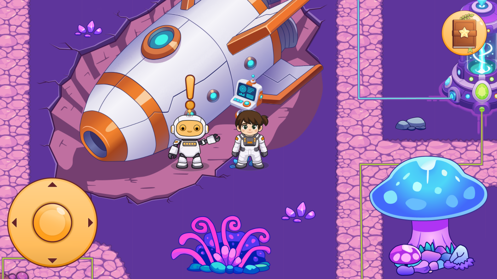

Cosmo und die Weltallfreunde ist ein digitales Lernspiel für Kinder der 3. Volksschulklasse. Ziel des Projekts war es, schulische Inhalte auf spielerische und motivierende Weise zu vermitteln und Lernen mit einer spannenden Geschichte zu verbinden. Das Spiel entstand im Rahmen eines Semesterprojekts in einem dreiköpfigen Team. Gemeinsam entwickelten wir die Rätsel, die Spielmechaniken und die Handlung in enger Abstimmung mit Lehrkräften, um die Inhalte bestmöglich auf die Zielgruppe abzustimmen. Mein Schwerpunkt lag auf der Gestaltung der Spielwelt sowie der Erstellung des Projektvideos. Dabei entwickelte ich die visuellen Umgebungen und unterstützte die Umsetzung einer kindgerechten und einladenden Atmosphäre. Zusätzlich war ich für die Konzeption, den Schnitt und die Aufbereitung des Präsentationsvideos verantwortlich. Ein besonderes Highlight des Projekts war ein Playtest mit einer Volksschulklasse. Durch das direkte Feedback der Kinder konnten wir wertvolle Erkenntnisse sammeln und das Spiel gezielt verbessern. Das fertige Spiel wurde mit Construct 3 entwickelt. Die grafischen Assets entstanden in Affinity Designer und Adobe Illustrator, während das Projektvideo mit DaVinci Resolve geschnitten wurde. Das Spiel ist vollständig spielbar und auf itch.io veröffentlicht.